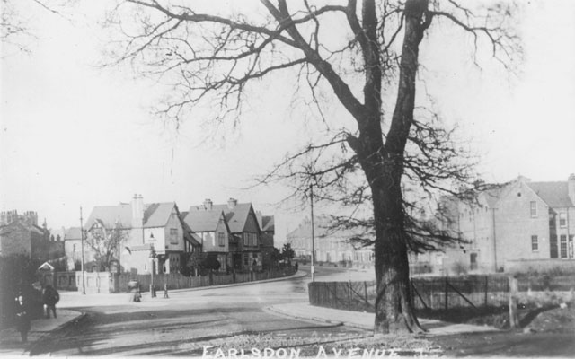

A brief history of Earlsdon The districts known as Asthill and Horwell lay in the south-west of St. Michael's parish, mainly to the east of the stream which runs south from Hearsall Common to Canley Ford. There was a well here called Horwell or Whorwell from at least the 14th century, and the stream has been called Horwell stream or the Whor (or Hor) Brook. Asthill was the land rising east of the Whor Brook and south from Hearsall Common towards Stivichall Common, which has been included in the modern Earlsdon. The roads called Asthill Grove and Asthill Croft, east of Warwick Road, may mark the eastern extremity of this district. Horwell as the name for a locality has disappeared, and has been replaced for some purposes by that of Hearsall. Except for Hearsall Common, Hearsall Golf Course, and some playing fields the whole area is occupied by houses of the 19th century and later. In the 14th century the boundary of the inner liberties of the city ran from Stivichall through Aylesden (Earlsdon) Field and Blackorchard Field to Guphill Ford, so including the north-east of Asthill in the city. After the dissolution of the county of the city in 1842 the railway line from Coventry to Birmingham, which crosses the area south of Hearsall Common, became the boundary of the new municipal borough. The land north of the railway therefore remained in the city, and the rest of the two districts was taken into the city in the boundary extension of 1890. Hearsall Common and strips of common along Earlsdon Lane and Whor Lane were inclosed in the Coventry commons' inclosure of 1875, some parts being allotted to the corporation and others sold. Land south of the railway and west of Earlsdon Lane was bought for building in 1853. This was laid out with streets and partly built up, forming the detached suburb of Earlsdon which was occupied mainly by watchmakers. Further to the southeast, near Warwick Road and Kenilworth Road, there were some large houses in their own grounds by 1887. This area was evidently becoming one of the most favoured residential districts of Coventry. Spencer Park, immediately south of the railway, was opened in 1883 and the new King Henry VIII School, with its playing fields adjoining the park, was built in 1885. By 1906 the former watchmaking suburb had spread southwards between Whor Lane and Earlsdon Lane, over land which had belonged to Earlsdon Farm. To the west, by the Hor Brook, was a horticultural nursery, later called Earlsdon Rose Nursery. By the First World War there were more houses, some with large gardens, to the east of Earlsdon Lane, while in the west Hearsall Golf Course was laid out. Meanwhile building to the north of the railway had joined Earlsdon to the mid-19th-century development at Chapel Fields. Immediately after the war scattered building development began west of Whor Lane when the districts on both sides of the Hor Brook became known as Beechwood, Canley, and Westwood Gardens. Earlsdon Lane and Whor Lane were straightened and renamed Earlsdon Avenue and Beechwood Avenue respectively. The many gardens and the survival of Stivichall Common, well planted with trees, had always given the southern part of the district a leafy appearance. This was increased by the opening of the War Memorial Park beyond Kenilworth Road in 1921. In spite of more building, sometimes in the grounds of older houses, and the erection of an eleven-story block of flats between Kenilworth Road and Asthill Grove the character of this area has still been maintained. From: 'The City of Coventry: The outlying parts of Coventry: Asthill, Horwell, and Whoberley', A History of the County of Warwick: Volume 8: The City of Coventry and Borough of Warwick (1969), pp. 48-50. |